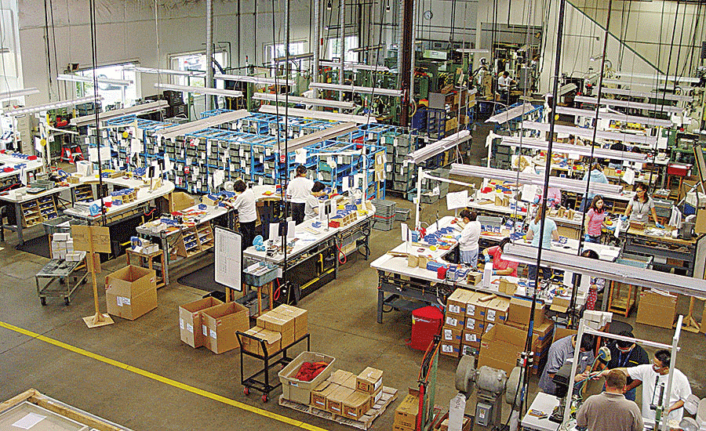
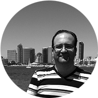
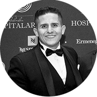
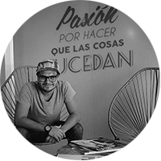
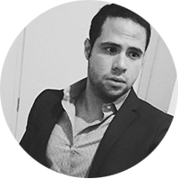

Si eres empresa, podemos apoyarte en estructurar un curso para tu personal referente a los siguientes temas:
- Estrategias de Ventas y Comercialización
- Trato con el cliente y Protocolo
- Contabilidad e Inteligencia Fiscal
- Exportación e Importación 
- Marketing y Comunicación

Dicho curso se armara a la medida de las necesidades del cliente para reforzar dicha área de interés para que con ello la empresa pueda maximizar sus resultados y minimizar su riesgo.
El costo del curso varía según la cantidad de horas de lección y la cantidad de personal a instruir.
Empleamos evaluaciones y métricas de análisis de conocimiento para asegurar que el curso instruido realmente haya sido aprendizaje de calidad para tu personal.
Si eres empresario, emprendedor o emprendedora, tenemos el diplomado perfecto para ti. Nuestro diplomado toca todos los puntos clave para poder crear, gestionar, crecer y posicionar tu proyecto o empresa. Si careces del tiempo para cursar una carrera o maestría, esta es tu mejor opción dado a que todo el contenido que verás en el diplomado es de suma calidad y 100% aplicable a tu vida profesional.
Si ya tienes un proyecto, empresa o idea de negocio, lo podrás emplear durante el diplomado como caso práctico durante la evolución de todos los temas. De este modo apoyándote de forma personalizada a que puedas cristalizar dicha iniciativa.
El diplomado de AORI Arquitectura Empresarial se lleva a cabo 5 veces al año solamente. En las siguientes fechas de inicio: 09 de Enero, 2016 – 27 de Febrero, 2016 05 de Marzo, 2016 – 07 de Mayo, 2016 14 de Mayo, 2016 – 02 de Julio, 2016 06 de Agosto, 2016 – 01 de Octubre, 2016 08 de Octubre, 2016 – 26 de Noviembre, 2016
La duración del diplomado es de 2 meses. Se lleva a cabo todos los sábados en sesiones de 4 horas con “coffee break” de 30 minutos en 2 horarios: 8:00am a 12:30pm y 2:00 a 6:30pm. Total de horas de instrucción en el diplomado = 32 horas de clase.
El diplomado esta impartido por expertos en las respectivas materias. A continuación una breve descripción de los instructores: 
Ignacio González: Ex – subdirector nacional y Fundador de Teletón. Maestro titular en licenciaturas de ciencias económico administrativas en la Universidad Panamericana (UP), experto en el método CANVAS BUSINESS MODEL y su aplicación llevada a la práctica. Ignacio González inicio con un grupo de 8 personas el proyecto Teletón, casi 10 años después tenía un equipo de más de 3000 individuos.
Juan Manuel Riestra: Conferencista, Filántropo, Director General de AORI Arquitectura Empresarial y Director Asociado de 3KAIDAS MKT, Juan es un individuo experto en desarrollo de modelos de negocio y modelos de franquicia. Su experiencia asesorando más de 50 empresas a través de AORI en conjunto con su experiencia personal en más de 10 negocios propios ejecutados tanto nacional como internacionalmente, le ha permitido a Juan el poder dimensionar con claridad cuáles son las necesidades prácticas y de conocimiento que nuestros alumnos de diplomado requieren con tanta urgencia.
Raúl Toral: Conferencista, Exitoso Empresario, Director General de 3Kaidas MKT y Director Asociado en AORI Arquitectura Empresarial, Raúl es un excelente creativo, experto en comunicación y marketing. Ha trabajado durante toda su vida con más de 50 empresas apoyándoles en estos temas. Actualmente cuenta con la gestión de la comunicación de varias empresas a nivel nacional, lo cual permitirá a los alumnos comprender con éxito como son los procesos creativos, como desarrollar una campaña de marketing exitosa y que factores tomar en cuenta según el giro en el que se encuentren.
Arturo Nieto: Experto en procesos y Logística, Socio de JACRO SA de CV empresa enfocada a la manufactura de productos industriales de limpieza con grado alimenticio. Director Asociado de AORI Arquitectura Empresarial. Arturo es un individuo capacitado en temas de ISO 9000 1 y con la experiencia propia de estandarización de modelos de negocio, optimización de procesos e implementación de tableros de control que permiten que las empresas puedan cristalizar sus metas en un marco de tiempo claro y conciso.
El costo del diplomado es de $15,200.00 pesos + IVA (en caso de requerir factura). Contamos con terminal bancaria para pagos con tarjeta de crédito y/o débito. El cupo es limitado, máximo 12 alumnos por horario.
A continuación puedes descargar el PDF con el plan de estudios que cubre el diplomado, especificaciones del mismo y todo lo que incluye.
PDF Diplomado AORI Arquitectura Empresarial
Esperamos contar con tu participación.
A T E N T A M E N T E, Juan Manuel Riestra
Director General AORI Arquitectura Empresarial.